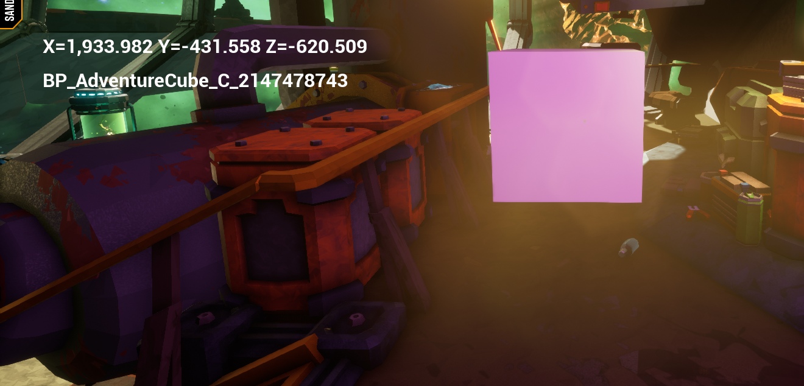

CoderTrevor's Adventures in Deep Rock Galactic Modding
Journey 3: I spy with my little eye...
By the end of this journey, you'll be able to look at almost any actor in the world and see its name, and you'll have an introduction to a very useful form of collision detection in Unreal Engine: line tracing.
You'll also be able to delete any actor your character looks at!
For reference, you can download archives of my project files from before this journey began and after its completion.
There's a saying, "It's a bad carpenter who blames their tools." I never really got that. Maybe the idea is that a good carpenter would invest in better tools? What about poor carpenters who are just starting out? Seems a bit harsh.
At any rate, as mod developers, it's definitely true that we can't blame our tools, because we can make our own tools! To that end, we're going to begin working on a blueprint that let's us inspect some aspects of the game in real time.
To get started, we'll make this blueprint tell us the name of whatever actor the player is looking at.
Part 1: Tracing a line from the camera
To see what we're looking at, we're going to be tying into the physics system and tracing a line beginning at the camera and ending somewhere in the distance. The line will begin at the camera position and the endpoint will be based on the direction the camera is facing.
- In the
AdventurousModfolder, create a new Actor blueprint calledBP_ActorInfoand open it for editing. - Right-click on the event graph and add a
Get Player Camera Managernode. - Drag off two nodes from this one,
Get Camera LocationandGet Actor Forward Vector. - From the
Get Actor Forward Vectornode, drag off from theReturn Valuenode and type in*in the search bar, and selectvector * float. - Type
10000in the float box.
- From the
Get Camera Locationnode, drag off and type+in the search bar. Selectvector + vector. - Drag the return value from the
Xnode into the second box of the addition. -
Right-click on an empty space in the graph and add a new
LineTraceByChannelnode. - Drag the output of the
Get Camera Locationnode to theStartinput of theLineTraceByChannelnode. - Drag the output of the
vector + vectornode to theEndinput of theLineTraceByChannelnode. - We want to do this every frame, so move the
Event Ticknode over and drag its execute pin to theLineTraceByChannelnode. > - Our graph is started to look a bit messy, so let's clean it up. Here's how I've cleaned mine up, but you can do whatever you think looks the most pleasing.

Get Actor Forward Vector will return a unit-vector (a vector of length one) which points in the direction the camera is facing.
we'll want to look forward far off in the distance, so we're going to multiply this vector by 10,000, which will make it 100m in length (since the units are in cm).
We want two points in world-space to define a line. We have one of them (the camera location), and we have a directional vector 100m long. If we just add the camera location to this vector, we'll get the other point.
Now we have the two endpoints to define our line and we can tie into Unreal's pysics system with a line trace.
{kind=link}
There's a lot of ways you can make a graph prettier, like straightening the connections between nodes. Hold shift and select multiple nodes, then right-click on them and select
Arrangement → Straighten Connections. Or just press q. It makes a difference which node
you've selected last. There's also other options under the Arrangement menu; I recommend you play around with them to see what you like best.
In the screenshot above, I straightened the connection between Get Camera Location and LineTraceByChannel, and aligned the column
of nodes in the middle to the right.
Part 2: Doing something with the result
Now we have a way to know what actor the player is looking at, but we need to do some legwork to print info about it on the screen.
The first thing we need is to save a reference to our HUD so we can set the text on it. This should be something you're familiar with by now:
- From the
BeginPlayevent, drag out a newGet Actor of Classnode and set the class toBP_AdventurousMod. - Drag off from the
Return ValueaGet HUD Refnode. - Promote this to a variable named
HUD Ref.
- Collapse the three nodes you just added to clean up the graph.
- Go back to the
LineTraceByChannelnode, drag off fromOut Hitand create aBreak Hit Resultnode. - From
Actor Hit, drag off aGet Display Namenode. - Next, drag in a
Get HUD Refnode. From there, Drag outGet txtOutput2→SetText (Text). - Drag the
Return ValuefromGet Display Nameto theIn Textinput of theSetText (Text)node. This will automatically create aToText (string)conversion node. - Finally, drag the execution pin from the
LineTraceByChannelnode to theSetText (Text)node. - Save and compile this blueprint and open the
BP_AdventurousModblueprint. - Drag off from the last
SpawnActornode and create a newSpawn Actor from Classnode. - Set the class to the new
BP_ActorInfoblueprint. - As always, split the
Spawn Transforminput to set the position and change the collision rules to ignore collisions and always spawn. - Compile and save this blueprint and launch the mod.

Now we can use our reference to write to the HUD.
Now we can see everything that gets returned to us when a line trace completes. It's a lot! Some of this won't apply to every hit, though.
For instance, Hit Bone Name will only have a value if a skeletal mesh was hit.
We're most-interested in Actor Hit.
{kind=link}
{kind=link}
{kind=link}
Run around and take a look at things. This should help you get a better understanding of how things are constructed in the space rig, and might just give you some ideas of what to mod and where to start.
You'll notice that you don't see a description for everything. That's because we're only getting the names of actors, and only when they have collision volumes attached. Still, you can see a lot of stuff!
Part 3: Having some fun with it
This next part isn't useful for modding per se, but it will be fun!
We're going to add the ability to delete any actor by looking at it and pressing delete. All we need is to store a reference to the actor being viewed,
and add an event to destroy it when the delete key is pressed.
- Critically, we first need to enable our actor to receive input. Go to the
Event BeginPlaynode; we'll want to add another node after theGet HUD Refcollapsed code. - Select the
Get HUD Refnode and look at theDetailspane. If you don't have this pane, you can open it by navigating toWindow→Detailsin the top menu. - Click the
+next toOutputsto add a new output. - Name the new output
Thenand set its type toExec. - Next, we need to go into the
Get HUD Refnode (double-click on it) and make sure the execution output is connected to the rest of the graph. Otherwise, we'll be stuck with a subtle bug where nothing that comes after that node will be executed, and the reason why won't be obvious.
- Back in the main Event Graph, add an
Enable Inputnode afterGet HUD Refand drag off thePlayer Controllerinput into a newGet Player Controllernode.
Remember this step and don't forget it! Not just here, but in general. At some point, you will wonder why your blueprint isn't responding to any keypresses, and leaving out thisEnable Inputnode will be the reason. - On the
Break Hit Resultnode, Right-click on theHit Actoroutput and promote it to a variable calledVisible Actor.
- Next, create a
Deletekeyboard event. - From the
Pressedpin, drag out a newDestroy Actornode. - Drag in the
Visible Actorreference and set it as theTargetof theDestroy Actornode.
- Compile and save the blueprint and hop back into your mod.
- Enjoy your new God-like ability to erase almost any item from reality with the press of a key!
Oh no! We don't have any execution pin to drag off of from the Get HUD Ref node! We can easily fix that, though.
execute and execute outputs Then to keep any text from showing up next to the pin.
{kind=link}
Next, we'll store a reference to the actor being viewed.
{kind=link}
{kind=link}